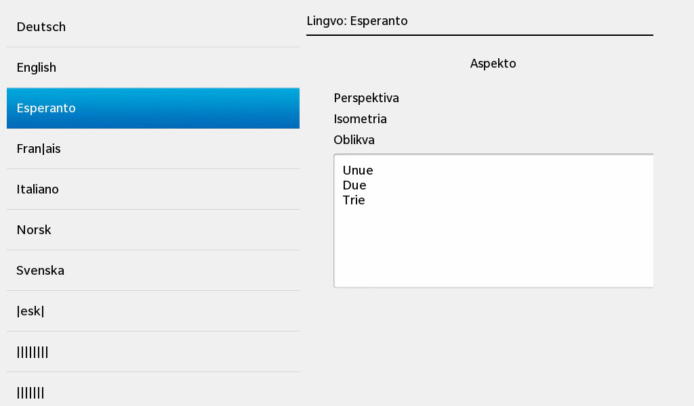

Files:
The Internationalization (I18N) example demonstrates Qt's support for translated text. Developers can write the initial application text in one language, and translations can be provided later without any modifications to the code.

In this example we'll learn how to use the internationalization features provided by Qt to switch the texts in the UI between multiple translations. We'll learn how to use QTranslator to load a translation catalog and how to mark user visible texts for translation.
The sample application consists of a ListView at the bottom where the user can select a language, and a couple of text-containing controls at the top which adapt the translation of their text according to the selected language.
// A standard ListView listing the various language selections ListView { id: languageSelector layoutProperties: DockLayoutProperties { horizontalAlignment: HorizontalAlignment.Fill verticalAlignment: VerticalAlignment.Bottom } dataModel: _model listItemComponents: ListItemComponent { StandardListItem { description: ListItem.data reserveImageSpace: false } } onSelectionChanged: _app.setCurrentLanguage (indexPath) }
The ListView uses a data model '_model' that is exported from C++ to the UI and whenever the user selects a language, the setCurrentLanguage() slot of the application object is invoked.
// Container contents transformed by selection MainView { minHeight: 960 maxHeight: 960 }
The upper part of the UI is encapsulated in the MainView.qml file, which is instantiated inside main.qml.
// Function tasked with the setting and translation of the Label's text function retranslate () { headerLabel.text = qsTr ("Language: %1").arg (qsTr ("English")); viewLabel.text = qsTr ("View"); perspectiveLabel.text = qsTr ("Perspective"); isometricLabel.text = qsTr ("Isometric"); obliqueLabel.text = qsTr ("Oblique"); }
MainView.qml contains a top-level function that translates all user visible texts from its source language (normally english) to their target language by using the qsTr() function.
The App class contains all the business logic of the application and is also responsible for initializing the UI.
App::App() : m_translator(0) { setupLanguageModel(); QmlDocument *qml = QmlDocument::create().load("main.qml"); if (!qml->hasErrors()) { /** * Make the language model available as context properties, * it is used by the ListView in the UI. */ qml->setContextProperty("_model", &m_model); /** * Make the App object available to the UI as well, so that its setCurrentLanguage() * method can be invoked from there. */ qml->setContextProperty("_app", this); Page *appPage = qml->createRootNode<Page>(); if (appPage) { Application::instance()->setScene(appPage); /** * Lookup the main view and text area controls in the QML tree and store them * in our member variables. * Note: We use QPointers here for m_mainView and m_textArea, so we can always * check whether the objects have been deleted by the UI in the meantime. */ m_mainView = appPage->findChild<Control*>("mainView"); m_textArea = appPage->findChild<TextArea*>("textArea"); // Pre-select the second entry - English setCurrentLanguage(QVariantList() << QVariant(1)); } } }
Inside the constructor we load the 'main.qml' file to initialize the UI and we export the data model that contains the languages and the 'App' object to the UI, so that these two objects are accessible from within the 'main.qml' file. After the root node of the UI has been constructed, we lookup the C++ objects that represent the MainView.qml and its contained TextView control. This lookup is done by using the findChild() method on the root node and passing the names that have been specified for the 'objectName' properties in the QML file:
// A standard TextArea TextArea { id: textArea objectName: "textArea"
In the last step we pre-select a language by calling the setCurrentLanguage() method with an index path pointing to the second entry in the data model.
The model itself setup inside the setupLanguageModel() method:
void App::setupLanguageModel() { // Retrieve a list of all available translation catalog files ... const QStringList qmFiles = findQmFiles(); // ... fill the internal language name -> catalog file map ... foreach (const QString &qmFile, qmFiles) { m_languageMap.insert(languageName(qmFile), qmFile); } // ... and also fill the language model with the language names. foreach (const QString &language, m_languageMap.keys()) { m_model << language; } }
We first retrieve the list of all qm files (the translation catalogs, one for each language) that are shipped with this sample application and then we insert them into a map with the language name as key and the path to the qm file as value. The language name is additionally appended to 'm_model', a QListDataModel<QString> that is used as data model by the ListView in the UI.
Now the application is initialized and the user can start to switch the languages. Whenever the selection of the ListView changes, the setCurrentLanguage() slot of the application object is invoked:
void App::setCurrentLanguage(const QVariantList &indexPath) { // Retrieve the currently selected language const QString language = m_model.data(indexPath).toString(); // First remove any previous installed translator ... if (m_translator) { qApp->removeTranslator(m_translator); delete m_translator; m_translator = 0; } // ... then create and install a new translator for the selected language ... m_translator = new QTranslator(this); m_translator->load(m_languageMap.value(language)); qApp->installTranslator(m_translator); // ... and trigger the translation of the texts inside the UI. if (m_mainView) { QMetaObject::invokeMethod(m_mainView, "retranslate"); } if (m_textArea) { QString text; for (int i = 0; listEntries[i]; ++i) { /** * The static string literals, that have been marked to be translated with * QT_TRANSLATE_NOOP above, are eventually translated here. * Note: The context identifier ('MainView' here) must match with the context identifier * that is used in the QT_TRANSLATE_NOOP declaration. */ text += qApp->translate("MainView", listEntries[i]) + "\n"; } m_textArea->setText(text); } }
With the passed index path we can retrieve the language, the user has selected, from the model. Befor we load the translation catalog for the new language, we remove any previous loaded catalog and delete its associated QTranslator object.
Since the QTranslator expects the path to the qm file as parameter, we look up the path for the newly selected language in the map we have filled previously in setupLanguageModel().
Afterwards the new translator object can be installed on the global application object. Unfortunately just installing the translator does not update the texts, that has been wrapped with qsTr() inside the QML files, automatically. That is because qsTr() is a function and the translation is only done at the point when the function is invoked. However, as previously seen, our MainView.qml contains a top-level function that calls the qsTr() functions and assigns the results to the 'text' properties of the controls, so we can simply call this top-level function to trigger the retranslation.
Invoking a JavaScript function from C++ can be done with the QMetaObject::invokeMethod() method, which expects the pointer to the C++ object that represents the QML object with the JavaScript function and the name of the JavaScript function.
It is also possible to translate text that can not be wrapped with qsTr(), for example if the texts are part of a table structure:
/** * These static string literals will be used later on. * We use QT_TRANSLATE_NOOP here to just mark them as 'must-be-translated' * so that lupdate can extract them from the source code. */ static const char * const listEntries[] = { QT_TRANSLATE_NOOP("MainView", "First"), QT_TRANSLATE_NOOP("MainView", "Second"), QT_TRANSLATE_NOOP("MainView", "Third"), 0 };
In this case the QT_TRANSLATE_NOOP() macro can be used to mark text as a candidate for translation. The actual translation is then done by calling translate() on the global application object like done in setCurrentLanguage() for the content of the TextArea control.